Day 1
Sydney, Australia
Embarkation
Grand Princess leaves Sydney for the start of the voyage.
Depart 6:00 pm local, scheduled
Forty-four places we may explore on the 129-night voyage, from Central America to Europe, the North Atlantic, South America and Tahiti. Before departure, these are the outings we have penciled in, expected seasonal weather and bits of history that caught our attention. After each visit, we will add the story of what actually happened, along with our own photographs. Expect a few opinions.
Planning guide only. Outings are not bookings. Ship-to-shore tender ports are deliberately excluded from our shore plans. Route maps are illustrative voyage artwork. Destination photographs are reference images, not photographs taken by us.
The 129 nights span 130 numbered voyage days, including embarkation and return. The schedule counts Saturday 2 June twice on the eastbound crossing and skips Thursday 20 September on the way back. Local dates, times and landing arrangements may change. The sea-day image is an illustration, not a photo from this voyage.
Itinerary: iCruise day-by-day schedule · Cruiseabout day-by-day schedule · Princess voyage announcement.
Sydney, Brisbane and the first South Pacific island calls.
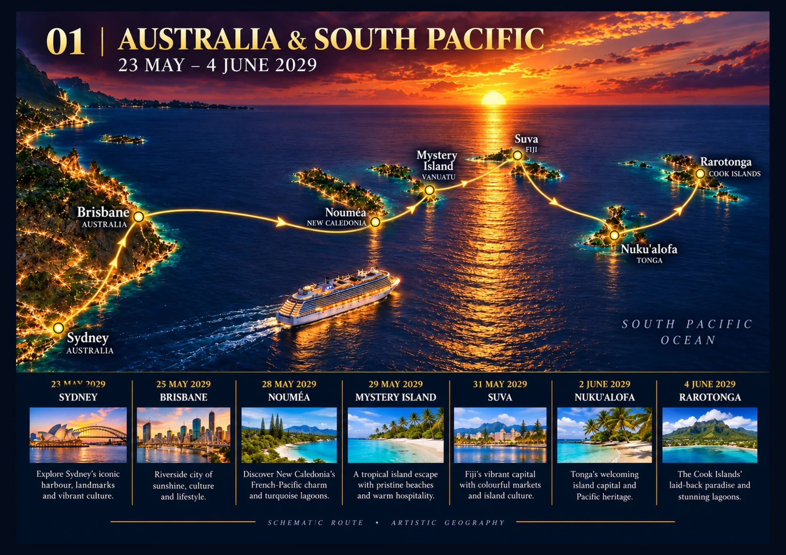
Grand Princess leaves Sydney for the start of the voyage.
Depart 6:00 pm local, scheduled
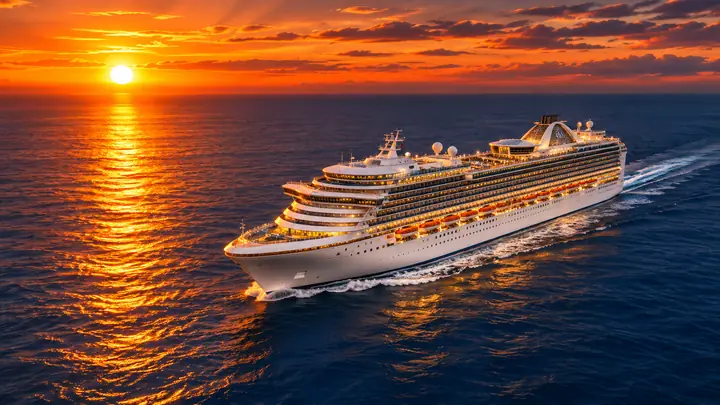
A day aboard Grand Princess, with no port call scheduled.
Brisbane is the last easy Australian stop before the Pacific crossing. The river, South Bank and city streets provide plenty to look at without organising a full tour.
Wander around town and stop for lunch.
Provisional plan — not a confirmed booking.Late May: usually mild and fairly dry, around 12–23°C; evenings can be cool.
The river snakes through Brisbane so thoroughly that the city can sometimes feel like one long detour to the opposite bank.
Aussies let loose in a foreign country. What could possibly go wrong? The plan is simple. Get off the ship, look at some old buildings, photograph something impressive, find lunch and get back before they sail without us. Anything beyond that is a bonus. Our photos and the full, unfiltered account of the day's adventures will be added right here once we've actually been there.
A day aboard Grand Princess, with no port call scheduled.
A day aboard Grand Princess, with no port call scheduled.
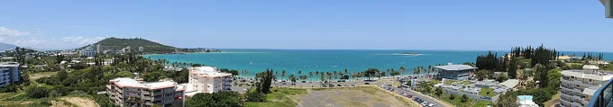
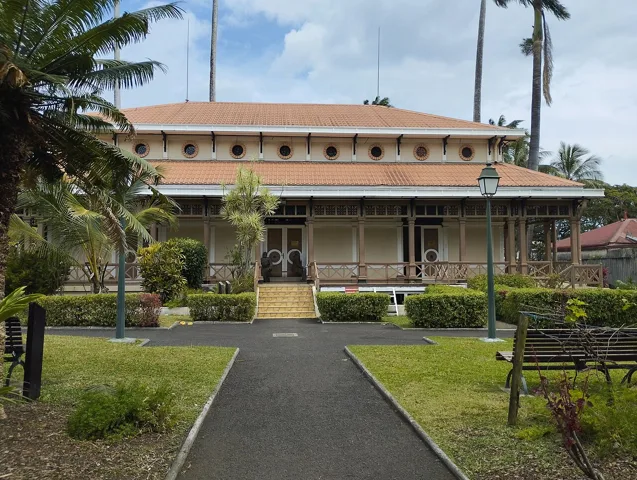
Nouméa mixes busy port life with French-influenced cafés and a South Pacific setting. The plan is to wander, take a few photographs and find something decent for lunch.
To be decided — no tour has been selected in our calendar yet.
We will update this when we settle on a plan.Late May: warm tropical weather around 20–26°C, with passing showers and sea breezes.
Baguettes and tropical weather coexist here. France apparently looked at the South Pacific and decided it needed better bread.
Aussies let loose in a foreign country. What could possibly go wrong? The plan is simple. Get off the ship, look at some old buildings, photograph something impressive, find lunch and get back before they sail without us. Anything beyond that is a bonus. Our photos and the full, unfiltered account of the day's adventures will be added right here once we've actually been there.
Scheduled port call. We plan to stay aboard rather than take a water shuttle.
Arrive 8:00 am · Depart 6:00 pm local, scheduled
A day aboard Grand Princess, with no port call scheduled.
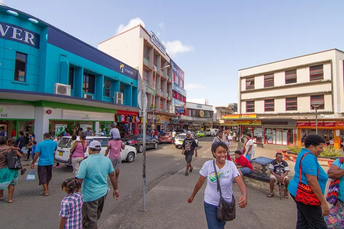
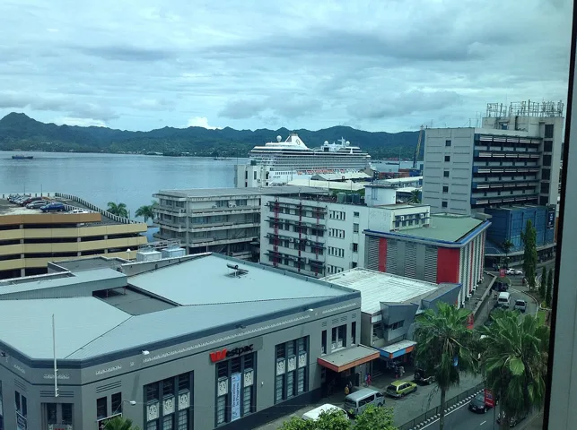
Suva is a working capital rather than a postcard resort. Its markets, colonial-era buildings and waterfront give it a bustle that can be more interesting than a carefully polished tourist strip.
To be decided — no tour has been selected in our calendar yet.
We will update this when we settle on a plan.Late May: humid and warm, roughly 22–29°C; tropical showers remain common.
Suva is known for its exceptionally wet tropical climate. Umbrellas are not necessarily an overreaction.
Aussies let loose in a foreign country. What could possibly go wrong? The plan is simple. Get off the ship, look at some old buildings, photograph something impressive, find lunch and get back before they sail without us. Anything beyond that is a bonus. Our photos and the full, unfiltered account of the day's adventures will be added right here once we've actually been there.
A day aboard Grand Princess, with no port call scheduled.
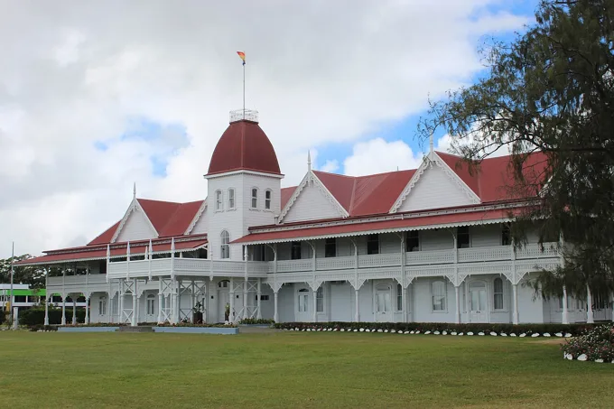
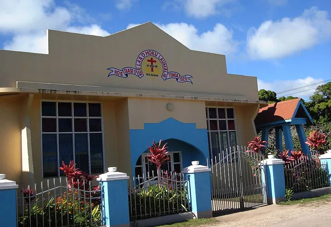
Saturday 2 June repeats at sea after the eastbound International Date Line crossing.
Tonga’s capital is a compact mix of shops, markets, churches and royal history. We know the place, so there is no need to pay a coach to explain it to us all over again.
To be decided — no tour has been selected in our calendar yet.
We will update this when we settle on a plan.Early June: warm, about 20–27°C, with trade winds and occasional showers.
Tonga remains a kingdom, which makes ordinary errands happen in the shadow of royal tradition.
Aussies let loose in a foreign country. What could possibly go wrong? The plan is simple. Get off the ship, look at some old buildings, photograph something impressive, find lunch and get back before they sail without us. Anything beyond that is a bonus. Our photos and the full, unfiltered account of the day's adventures will be added right here once we've actually been there.
Saturday 2 June repeats after the eastbound Date Line crossing.
A day aboard Grand Princess, with no port call scheduled.
Scheduled port call. We plan to stay aboard rather than take a water shuttle.
Arrive 7:00 am · Depart 5:00 pm local, scheduled
Costa Rica, Panama, Colombia, Aruba and Barbados, with the first Panama Canal passage.
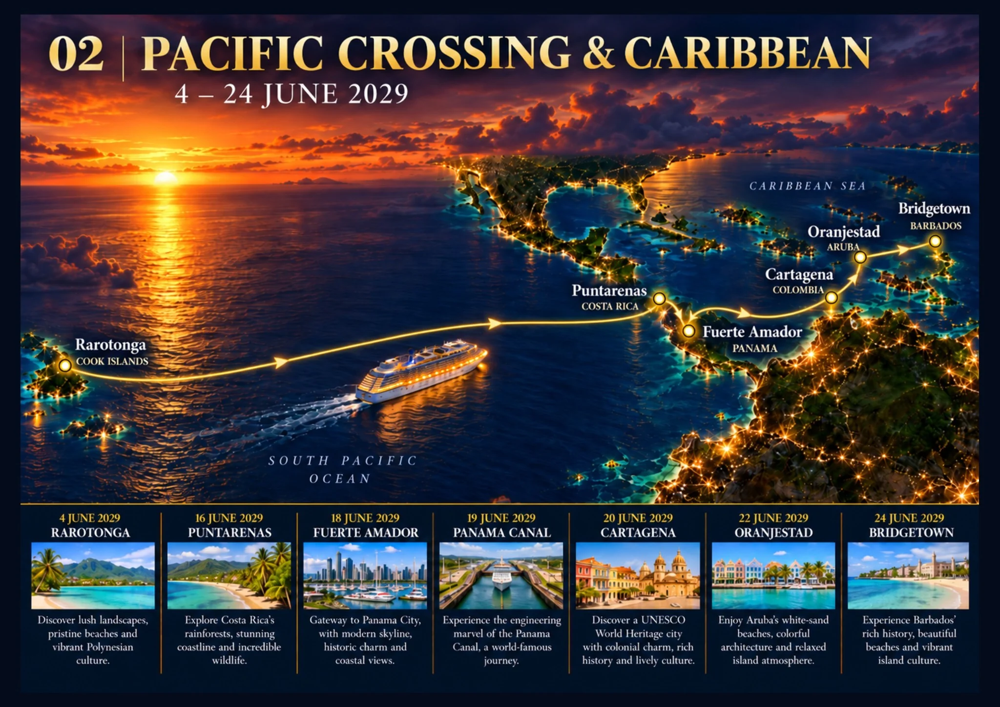
A day aboard Grand Princess, with no port call scheduled.
A day aboard Grand Princess, with no port call scheduled.
A day aboard Grand Princess, with no port call scheduled.
A day aboard Grand Princess, with no port call scheduled.
A day aboard Grand Princess, with no port call scheduled.
A day aboard Grand Princess, with no port call scheduled.
A day aboard Grand Princess, with no port call scheduled.
A day aboard Grand Princess, with no port call scheduled.
A day aboard Grand Princess, with no port call scheduled.
A day aboard Grand Princess, with no port call scheduled.
A day aboard Grand Princess, with no port call scheduled.


A working Pacific port and gateway to Costa Rica’s wetlands, tropical countryside and wildlife. Town itself is easy enough, but the memorable sights are outside the waterfront. A guided coach or boat-and-coach outing gives you more to see without walking long distances. There is plenty of coastline to look at, but the wildlife trips inland are the real draw. We will judge the place by what we see, not by what the brochure promises.
Walk from the ship to the waterfront, the town’s main tourist area.
Provisional plan — not a confirmed booking.Mid-June: hot and humid, roughly 24–31°C; afternoon rain or thunderstorms are common.
The local shaved-ice dessert called a “Churchill” is named after a customer said to resemble the British prime minister. An unlikely diplomatic achievement for a bowl of sugar.
Aussies let loose in a foreign country. What could possibly go wrong? The plan is simple. Get off the ship, look at some old buildings, photograph something impressive, find lunch and get back before they sail without us. Anything beyond that is a bonus. Our photos and the full, unfiltered account of the day's adventures will be added right here once we've actually been there.
A day aboard Grand Princess, with no port call scheduled.


The cruise berth sits outside Panama City on the Amador Causeway. The city combines a skyline of modern towers with a remarkably preserved colonial quarter. Your ship passes through the Panama Canal the next day, so this is a good chance to concentrate on the city rather than paying twice for locks. Panama City changes character quickly, from tower blocks to old streets. The full canal transit is already part of the voyage, so another expensive lock tour may be unnecessary.
Panama City hop-on, hop-off sightseeing bus.
Provisional plan — not a confirmed booking.Mid-June: very humid, roughly 24–31°C, with heavy tropical showers possible.
Panama hats are actually associated with Ecuador. Panama gets the name because the hats became famous through the canal region—geography was apparently optional.
Aussies let loose in a foreign country. What could possibly go wrong? The plan is simple. Get off the ship, look at some old buildings, photograph something impressive, find lunch and get back before they sail without us. Anything beyond that is a bonus. Our photos and the full, unfiltered account of the day's adventures will be added right here once we've actually been there.
First full crossing, from the Pacific to the Caribbean. This is a shipboard transit, not a port call.
Transit begins 6:00 am · Transit ends 6:00 pm local, scheduled


Cartagena’s old walled city is packed with bright colonial houses and squares, while modern Bocagrande looks entirely different. Summer can be hot and humid; a driven circuit with brief stops is much more comfortable than spending hours on exposed cobbled streets. The old walls, balconies and fortifications are the main attraction. The heat may be less charming than the architecture, so a vehicle and sensible stops will win over a heroic march.
Cartagena Panoramic Sightseeing Bus.
Provisional plan — not a confirmed booking.Late June: hot and sticky, approximately 26–32°C, with strong sun and occasional downpours.
Cartagena once needed formidable walls to deter pirates. Today the invaders arrive with cameras and guided-tour stickers.
Aussies let loose in a foreign country. What could possibly go wrong? The plan is simple. Get off the ship, look at some old buildings, photograph something impressive, find lunch and get back before they sail without us. Anything beyond that is a bonus. Our photos and the full, unfiltered account of the day's adventures will be added right here once we've actually been there.
A day aboard Grand Princess, with no port call scheduled.
.jpg)

Aruba is compact, colourful and relatively easy to tour. Oranjestad offers pastel Dutch-Caribbean buildings near the harbour, while the island’s dry interior, rocky coast and beaches are best experienced by vehicle. This need not become an expensive day. The Dutch-influenced facades look surprisingly cheerful for a working Caribbean port. It is small enough to combine town and coastline without committing to a whole-day expedition.
Free downtown trolley and historic Oranjestad.
Provisional plan — not a confirmed booking.Late June: around 27–32°C, breezy and generally drier than many Caribbean islands.
Aruba’s pastel buildings reflect Dutch Caribbean history; the island is also famously windy, which the postcards rarely mention.
Aussies let loose in a foreign country. What could possibly go wrong? The plan is simple. Get off the ship, look at some old buildings, photograph something impressive, find lunch and get back before they sail without us. Anything beyond that is a bonus. Our photos and the full, unfiltered account of the day's adventures will be added right here once we've actually been there.
A day aboard Grand Princess, with no port call scheduled.
.jpg)

Bridgetown is a working Caribbean capital with Georgian-era buildings and an active harbour. The island’s coastlines and plantation country offer the better contrast. A half-day coach tour leaves time for a local lunch before the afternoon sailing. The east coast is rugged, quite unlike the resort beaches. A circular coach trip should make that contrast obvious without needing to spend the day in the sun.
Taxi to Brownes Beach on Carlisle Bay, followed by lunch near the beach.
Provisional plan — not a confirmed booking.Late June: hot, humid and breezy, around 26–31°C; showers may arrive quickly.
Barbados is known for flying fish, a species that looks as if it briefly reconsidered being a fish.
Aussies let loose in a foreign country. What could possibly go wrong? The plan is simple. Get off the ship, look at some old buildings, photograph something impressive, find lunch and get back before they sail without us. Anything beyond that is a bonus. Our photos and the full, unfiltered account of the day's adventures will be added right here once we've actually been there.
Madeira, Tenerife, Cádiz and Gibraltar as we reach Europe.
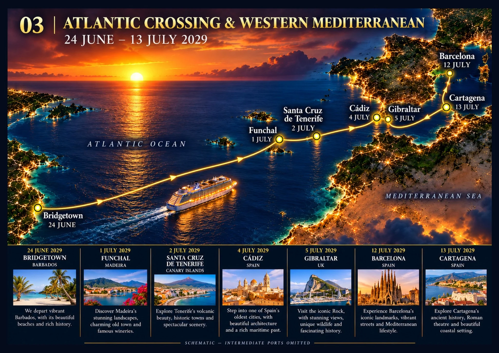
A day aboard Grand Princess, with no port call scheduled.
A day aboard Grand Princess, with no port call scheduled.
A day aboard Grand Princess, with no port call scheduled.
A day aboard Grand Princess, with no port call scheduled.
A day aboard Grand Princess, with no port call scheduled.
A day aboard Grand Princess, with no port call scheduled.


Funchal is built against a steep volcanic island, so the best views come from the hills. The city is pleasant but the countryside, dramatic valley viewpoints and coastal villages make a scenic coach especially worthwhile. Roads have tight bends; choose a comfortable operator. Madeira rises sharply behind the harbour, so a short drive produces a dramatic change of view. A vineyard or village stop would provide a more interesting day than another souvenir queue.
Funchal by hop-on, hop-off bus, pencilled in for 7:30 am–12:30 pm.
Provisional plan — not a confirmed booking.Early July: pleasantly warm, approximately 19–26°C in Funchal; cooler in the mountains.
Madeira has a traditional basket-toboggan ride down steep streets—an idea apparently born before anyone asked whether brakes were necessary.
Aussies let loose in a foreign country. What could possibly go wrong? The plan is simple. Get off the ship, look at some old buildings, photograph something impressive, find lunch and get back before they sail without us. Anything beyond that is a bonus. Our photos and the full, unfiltered account of the day's adventures will be added right here once we've actually been there.


Tenerife mixes an easy-going port city with huge volcanic landscapes. A guided island drive gets you well beyond the capital. La Laguna has old architecture; Mount Teide is dramatic but involves altitude, so the precise itinerary matters more than the promotional title. The island is much more than its capital. A coach can get us into volcanic country or mountain villages, provided the roads and altitude suit the day.
Santa Cruz de Tenerife by hop-on, hop-off bus in the morning.
Provisional plan — not a confirmed booking.Early July: dry and warm near the coast, around 21–29°C; much cooler on Mount Teide.
Tenerife’s Mount Teide is Spain’s highest peak. The island manages to contain beach resorts and alpine-style scenery within an hour or two.
Aussies let loose in a foreign country. What could possibly go wrong? The plan is simple. Get off the ship, look at some old buildings, photograph something impressive, find lunch and get back before they sail without us. Anything beyond that is a bonus. Our photos and the full, unfiltered account of the day's adventures will be added right here once we've actually been there.
A day aboard Grand Princess, with no port call scheduled.


Cádiz is an old Atlantic city on a peninsula, and the ship docks close to the historic centre. You can see its cathedral exterior and waterfront cheaply. Nearby Jerez offers sherry and Andalusian countryside, though Seville itself needs a longer excursion. Cádiz can be enjoyed close to the ship, while Jerez lies inland in sherry country. Choosing between a lazy old-town day and a tasting excursion is hardly the worst dilemma.
City Sightseeing Cádiz Hop-on, Hop-off Bus.
Provisional plan — not a confirmed booking.Early July: hot and sunny, roughly 22–30°C; exposed streets can feel hotter.
Cádiz claims to be among the oldest continuously inhabited cities in Western Europe. It has had plenty of time to perfect the lunch break.
Aussies let loose in a foreign country. What could possibly go wrong? The plan is simple. Get off the ship, look at some old buildings, photograph something impressive, find lunch and get back before they sail without us. Anything beyond that is a bonus. Our photos and the full, unfiltered account of the day's adventures will be added right here once we've actually been there.


The Rock dominates this tiny British territory on Spain’s southern coast. Main Street is easy, but seeing viewpoints, tunnels and the famous Barbary macaques usually calls for local minibus transport. The ship sails early, so make this a compact morning trip. The Rock dominates everything and the monkeys have developed a reputation for opportunistic theft. An organised minibus could be the sensible compromise between seeing it properly and wearing out our shoes.
Europa Point and Coastal Views by Bus.
Provisional plan — not a confirmed booking.Early July: generally warm and dry, around 22–29°C; strong winds occasionally affect the Rock.
Gibraltar’s macaques are the only wild monkeys in Europe. They also have no respect for unsecured snacks.
Aussies let loose in a foreign country. What could possibly go wrong? The plan is simple. Get off the ship, look at some old buildings, photograph something impressive, find lunch and get back before they sail without us. Anything beyond that is a bonus. Our photos and the full, unfiltered account of the day's adventures will be added right here once we've actually been there.
Corsica, Tuscany and Rome, with historic cities and Mediterranean coastlines.
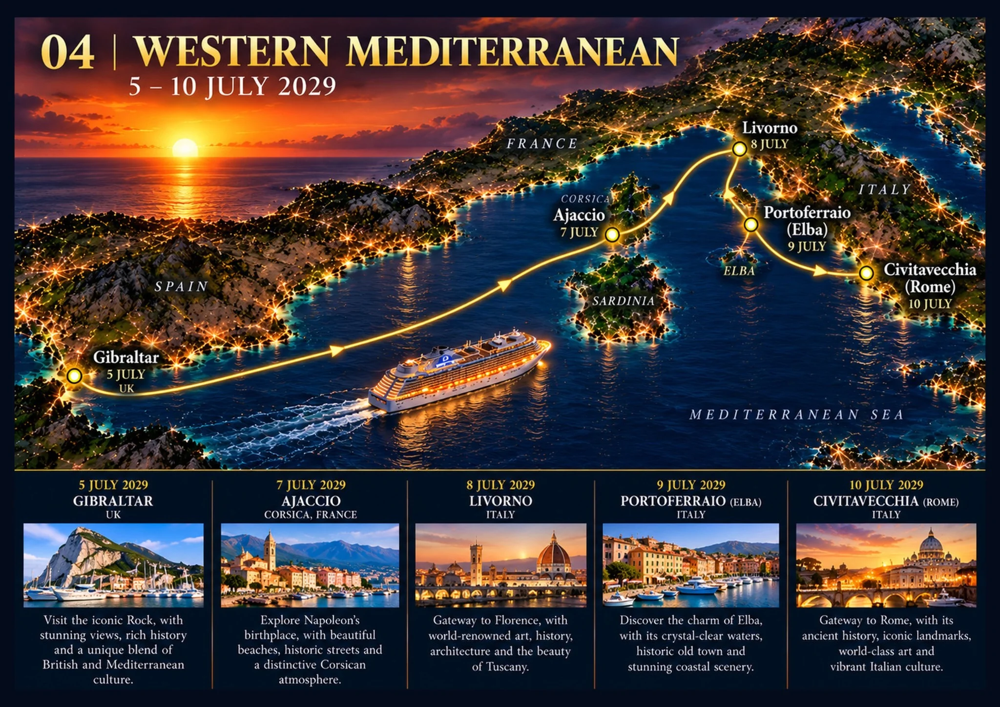
A day aboard Grand Princess, with no port call scheduled.


Ajaccio has an elegant harbour, Napoleon connections and attractive mountain-backed coastline. Its town is manageable, but a coach along the Sanguinaires coast is a better use of the day if you want scenery with little effort. Ajaccio has Napoleon connections everywhere, as if the city is determined nobody should forget him. The coastal road offers a completely different reason to look around.
Sanguinaires Islands Panoramic Train.
Provisional plan — not a confirmed booking.Early July: warm Mediterranean weather, about 20–28°C, with strong sunshine.
Napoleon Bonaparte was born in Ajaccio. The local souvenir trade has never let him rest.
Aussies let loose in a foreign country. What could possibly go wrong? The plan is simple. Get off the ship, look at some old buildings, photograph something impressive, find lunch and get back before they sail without us. Anything beyond that is a bonus. Our photos and the full, unfiltered account of the day's adventures will be added right here once we've actually been there.


Livorno is the cruise gateway to Tuscany. Pisa and Lucca are more manageable than Florence on a relaxed schedule, and the ship remains in port until midnight. This is a strong day for organised coach sightseeing away from the terminal. The Leaning Tower needs little introduction, and Lucca gives a quieter contrast to Pisa. With the long stop in port, a two-town outing looks more worthwhile than a rushed coach dash.
ItalyTours shared minivan — Best of Pisa & Lucca.
Provisional plan — not a confirmed booking.Early July: often hot, approximately 21–31°C; shade and water matter.
Pisa’s tower began leaning during construction. Generations later, it is still the most photographed engineering problem in Italy.
Aussies let loose in a foreign country. What could possibly go wrong? The plan is simple. Get off the ship, look at some old buildings, photograph something impressive, find lunch and get back before they sail without us. Anything beyond that is a bonus. Our photos and the full, unfiltered account of the day's adventures will be added right here once we've actually been there.
Scheduled port call. We plan to stay aboard rather than take a water shuttle.
Arrive 8:00 am · Depart 6:00 pm local, scheduled


Rome is far enough from Civitavecchia that transport planning matters. This is one of the four ports worth spending extra on: a guided vehicle outing can fit many major sights into a long port day without tackling trains or endless walks. Rome is a long way from Civitavecchia, so logistics matter as much as ambition. Seeing the main landmarks comfortably is a better outcome than spending the day standing in queues.
CruiseToCity — shared Rome minivan. Tour operator.
Provisional plan — not a confirmed booking.Early July: typically very hot, around 21–32°C, sometimes hotter; plan for exposed sightseeing.
Rome has an ancient law against taking marble from historic ruins; unfortunately that rule arrived after quite a lot had already disappeared.
Aussies let loose in a foreign country. What could possibly go wrong? The plan is simple. Get off the ship, look at some old buildings, photograph something impressive, find lunch and get back before they sail without us. Anything beyond that is a bonus. Our photos and the full, unfiltered account of the day's adventures will be added right here once we've actually been there.
Spain and Portugal, then north towards the Atlantic coasts of Ireland.
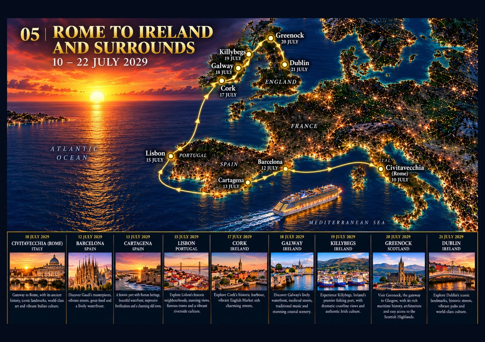
A day aboard Grand Princess, with no port call scheduled.


Barcelona is full of Gaudí buildings, lively streets and hilltop viewpoints. It is popular enough to be busy in summer. A guided coach is worth considering because its big sights are spread out across the city. Gaudí left a city full of buildings that refuse to behave like ordinary buildings. A proper panoramic circuit could cover far more than wandering one neighbourhood.
Hop-on, hop-off sightseeing bus.
Provisional plan — not a confirmed booking.Mid-July: warm and humid, roughly 23–30°C; afternoon sunshine is intense.
Barcelona’s Sagrada Família began construction in 1882 and still draws crowds. It may be the world’s most successful unfinished project.
Aussies let loose in a foreign country. What could possibly go wrong? The plan is simple. Get off the ship, look at some old buildings, photograph something impressive, find lunch and get back before they sail without us. Anything beyond that is a bonus. Our photos and the full, unfiltered account of the day's adventures will be added right here once we've actually been there.

.jpg)
This Cartagena is in Spain, not Colombia. Its Roman history, waterfront and compact old centre make it a good value port. You can see a lot locally without paying for an excursion, leaving more money for Rome or New York. This Cartagena is the Spanish naval city, not its Colombian namesake earlier in the voyage. The harbour and Roman remains make it an easy place to explore without spending a fortune.
Tourist sightseeing bus and waterfront lunch.
Provisional plan — not a confirmed booking.Mid-July: hot, dry Mediterranean conditions, around 23–32°C.
Cartagena’s Roman theatre was rediscovered in the 1980s beneath later buildings. A whole theatre, not simply a misplaced ticket.
Aussies let loose in a foreign country. What could possibly go wrong? The plan is simple. Get off the ship, look at some old buildings, photograph something impressive, find lunch and get back before they sail without us. Anything beyond that is a bonus. Our photos and the full, unfiltered account of the day's adventures will be added right here once we've actually been there.
A day aboard Grand Princess, with no port call scheduled.


Lisbon’s hills make a vehicle a sensible way to see the districts and viewpoints. Belém tells Portugal’s maritime story, while the streets of Alfama and the riverfront give the city its character. You have a long port call, so there is no need to rush. Lisbon has hills that seem personally offended by pedestrians. A coach for the viewpoints and Belém area is a much better proposition than walking every steep street.
Princess Easy Lisbon Panoramic coach tour.
Provisional plan — not a confirmed booking.Mid-July: sunny and often hot, around 19–30°C; inland excursions can be warmer.
Lisbon’s hills are so steep that historic lifts and funiculars became essential transport, not just tourist entertainment.
Aussies let loose in a foreign country. What could possibly go wrong? The plan is simple. Get off the ship, look at some old buildings, photograph something impressive, find lunch and get back before they sail without us. Anything beyond that is a bonus. Our photos and the full, unfiltered account of the day's adventures will be added right here once we've actually been there.
A day aboard Grand Princess, with no port call scheduled.
A day aboard Grand Princess, with no port call scheduled.
Donegal, the Clyde, Cork, Dover and the Belgian coast.
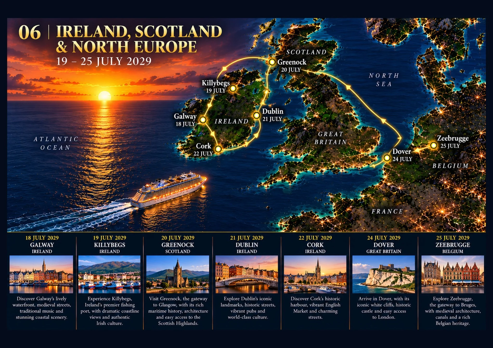
Scheduled port call. We plan to stay aboard rather than take a water shuttle.
Arrive 7:00 am · Depart 5:00 pm local, scheduled


Killybegs is a fishing port in County Donegal, surrounded by green hills and a rugged Atlantic coast. The biggest attractions are outside town. A panoramic excursion is far more rewarding than simply looking at the harbour. Killybegs is a working fishing harbour, not a manufactured tourist village. The big scenery is along the Donegal coast, which is why a guided drive deserves consideration.
Possible private bus or taxi to see the main sites and stop for lunch.
Provisional plan — not a confirmed booking.Mid-July: cool to mild, approximately 12–19°C; wind and rain are possible.
Killybegs is one of Ireland’s most important fishing ports. The fish market is decidedly more authentic than a plastic leprechaun.
Aussies let loose in a foreign country. What could possibly go wrong? The plan is simple. Get off the ship, look at some old buildings, photograph something impressive, find lunch and get back before they sail without us. Anything beyond that is a bonus. Our photos and the full, unfiltered account of the day's adventures will be added right here once we've actually been there.


Greenock is a Clyde estuary port. Glasgow lies inland, while Loch Lomond and the western lochs are ideal for a scenic coach day. If your priority is countryside rather than another city centre, Scotland delivers on this stop. From Greenock, Scotland opens up into lochs, villages and hills. This is a case where the best part of the visit may be outside the port altogether.
Princess Easy Scottish Lochs.
Provisional plan — not a confirmed booking.Mid-July: variable Scottish summer weather, roughly 12–20°C, with showers likely.
Glasgow once had so many shipyards that “Clyde-built” became a mark of quality worldwide. The river exported ships as efficiently as stories.
Aussies let loose in a foreign country. What could possibly go wrong? The plan is simple. Get off the ship, look at some old buildings, photograph something impressive, find lunch and get back before they sail without us. Anything beyond that is a bonus. Our photos and the full, unfiltered account of the day's adventures will be added right here once we've actually been there.
Confirm landing arrangements with Princess. No water-shuttle outing is planned.
Arrive 7:00 am · Depart 7:00 pm local, scheduled


Cobh has a colourful waterfront and a strong history of emigration and transatlantic liners. The ship docks near town, so this is one of the easiest places to explore on foot. Inland Cork and Blarney Castle are available if you want a longer excursion. Cobh has steep streets, striking rows of houses and a Titanic connection. Its waterfront is straightforward, while an excursion into County Cork would make a different day of it.
Princess Easy Cork: Scenic Drive & Irish Coffee.
Provisional plan — not a confirmed booking.Late July: mild, around 12–20°C; expect changeable skies and possible rain.
Cobh was the Titanic’s final port of call before crossing the Atlantic in 1912. Its history is considerably more serious than most cruise souvenirs.
Aussies let loose in a foreign country. What could possibly go wrong? The plan is simple. Get off the ship, look at some old buildings, photograph something impressive, find lunch and get back before they sail without us. Anything beyond that is a bonus. Our photos and the full, unfiltered account of the day's adventures will be added right here once we've actually been there.
A day aboard Grand Princess, with no port call scheduled.

.jpg)
Dover has its own famous cliffs and castle, but the long call permits a London excursion. This is a designated premium day: a comfortable guided coach can cover major London sights without spending the entire day managing trains. Dover has white cliffs, a castle and the prospect of a long coach ride to London. We can afford a bigger outing here, but ten hours on a bus still needs to earn its place.
Possible round trip to London.
Provisional plan — not a confirmed booking.Late July: often mild, around 14–22°C, but breezy on the cliffs.
Dover’s famous white cliffs are made of chalk. Britain somehow turned a geological deposit into a national symbol.
Aussies let loose in a foreign country. What could possibly go wrong? The plan is simple. Get off the ship, look at some old buildings, photograph something impressive, find lunch and get back before they sail without us. Anything beyond that is a bonus. Our photos and the full, unfiltered account of the day's adventures will be added right here once we've actually been there.


Zeebrugge is an industrial port; Bruges is the real draw. The medieval canal city is beautiful but paved with cobblestones. A coach transfer plus a boat trip or limited guided walk is a sensible compromise. Bruges is photogenic enough to make even a grey day look respectable. The cobblestones are another matter, so a coach drop-off and canal cruise need checking carefully.
Princess Bruges on Your Own.
Provisional plan — not a confirmed booking.Late July: comfortable summer conditions, around 15–24°C; showers remain possible.
Bruges has so many canals that it is nicknamed the Venice of the North. The comparison is kinder to the canals than to your shoes on cobblestones.
Aussies let loose in a foreign country. What could possibly go wrong? The plan is simple. Get off the ship, look at some old buildings, photograph something impressive, find lunch and get back before they sail without us. Anything beyond that is a bonus. Our photos and the full, unfiltered account of the day's adventures will be added right here once we've actually been there.
The Netherlands, Denmark and Norway's ports and fjords.
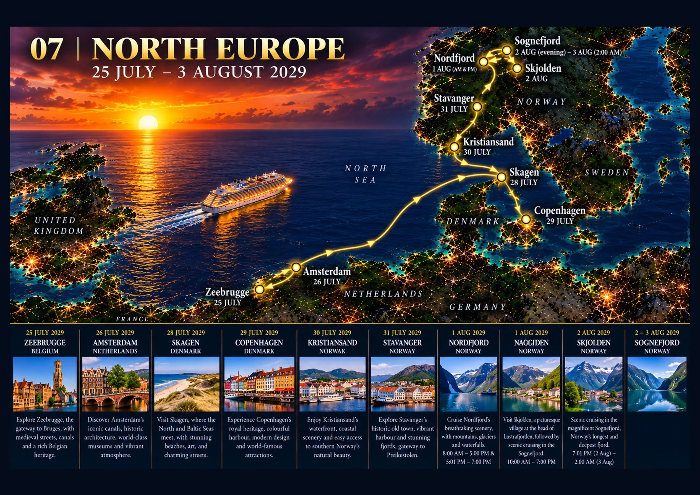


Grand Princess docks in IJmuiden, not central Amsterdam, so the journey into the city is important. The canal network is best viewed from a boat, while Zaanse Schans makes an excellent countryside alternative. The ship berths at IJmuiden rather than central Amsterdam. That transfer is part of the calculation, whether we choose the canal city or the windmill country outside it.
To be decided — no tour has been selected in our calendar yet.
We will update this when we settle on a plan.Late July: mild to warm, roughly 16–24°C, with occasional showers.
Amsterdam’s houses are famously narrow partly because historic taxes were tied to facade width. Tax policy literally shaped the skyline.
Aussies let loose in a foreign country. What could possibly go wrong? The plan is simple. Get off the ship, look at some old buildings, photograph something impressive, find lunch and get back before they sail without us. Anything beyond that is a bonus. Our photos and the full, unfiltered account of the day's adventures will be added right here once we've actually been there.
A day aboard Grand Princess, with no port call scheduled.


At Denmark’s northern tip, Skagen is known for dunes, coastal light and the meeting of two seas. A panoramic coach can show the town and headland without a long beach walk. Skagen sits near the meeting of two seas, which the tourists quite reasonably want to see. The dunes and lighthouse country are best taken in without a lengthy hike.
Historic Bedford sightseeing bus and Skagen harbour.
Provisional plan — not a confirmed booking.Late July: about 14–21°C, frequently windy near the headland.
At Grenen, two seas meet and their waves collide. Nature manages this without a traffic controller.
Aussies let loose in a foreign country. What could possibly go wrong? The plan is simple. Get off the ship, look at some old buildings, photograph something impressive, find lunch and get back before they sail without us. Anything beyond that is a bonus. Our photos and the full, unfiltered account of the day's adventures will be added right here once we've actually been there.


Copenhagen has royal landmarks, grand streets and an attractive waterfront, with attractions spread around the centre. A three-hour panoramic coach covers the essentials while keeping walking light. Copenhagen packs royal buildings, canals and bicycles into a compact city. An organised loop could let us see the highlights without joining the cyclists in their natural habitat.
Princess Easy Copenhagen.
Provisional plan — not a confirmed booking.Late July: generally 15–23°C, with long daylight hours and changeable breezes.
Copenhagen’s Little Mermaid statue is famously small. People still arrive expecting a monumental revelation.
Aussies let loose in a foreign country. What could possibly go wrong? The plan is simple. Get off the ship, look at some old buildings, photograph something impressive, find lunch and get back before they sail without us. Anything beyond that is a bonus. Our photos and the full, unfiltered account of the day's adventures will be added right here once we've actually been there.


Kristiansand is compact, with a pleasant harbour and an old quarter of white wooden houses. This is a good candidate for a low-cost independent day, leaving money for the Norwegian fjords and Faroe Islands. Kristiansand is one of those places where a gentle waterfront day may beat an expensive tour. The white wooden houses are easy to admire without buying a premium ticket.
Kristiansand City Train — sightseeing and lunch.
Provisional plan — not a confirmed booking.Late July: mild summer conditions around 13–22°C, with intermittent showers.
Kristiansand’s Posebyen area preserves white timber houses, an impressive survival in a city with a long history of major fires.
Aussies let loose in a foreign country. What could possibly go wrong? The plan is simple. Get off the ship, look at some old buildings, photograph something impressive, find lunch and get back before they sail without us. Anything beyond that is a bonus. Our photos and the full, unfiltered account of the day's adventures will be added right here once we've actually been there.


Stavanger has an easy harbourfront and a well-preserved area of white timber buildings. The Lysefjord scenery is the big attraction nearby, but the ship sails at 3 pm; tour timing must be tight. Stavanger offers a compact old harbour and the much grander scenery of Lysefjord. The short port call will decide whether a boat trip is practical.
Princess Cruise Along Lysefjord.
Provisional plan — not a confirmed booking.Late July: roughly 13–20°C, often breezy with showers.
Stavanger was once dominated by sardine canning; old factories now help explain why this oil-industry city has a rather fishy past.
Aussies let loose in a foreign country. What could possibly go wrong? The plan is simple. Get off the ship, look at some old buildings, photograph something impressive, find lunch and get back before they sail without us. Anything beyond that is a bonus. Our photos and the full, unfiltered account of the day's adventures will be added right here once we've actually been there.
Scheduled call in Nordfjordeid, followed by scenic sailing in Nordfjord.
Arrive 8:00 am · Depart 5:00 pm local, scheduled
Scheduled call in Skjolden, followed by evening scenic sailing in Sognefjord.
Arrive 10:00 am · Depart 7:00 pm local, scheduled
Cruiseabout lists early scenic sailing in Sognefjord before the day at sea. Scenic timings are to be confirmed.
The Faroe Islands, Iceland and the crossing towards Newfoundland.
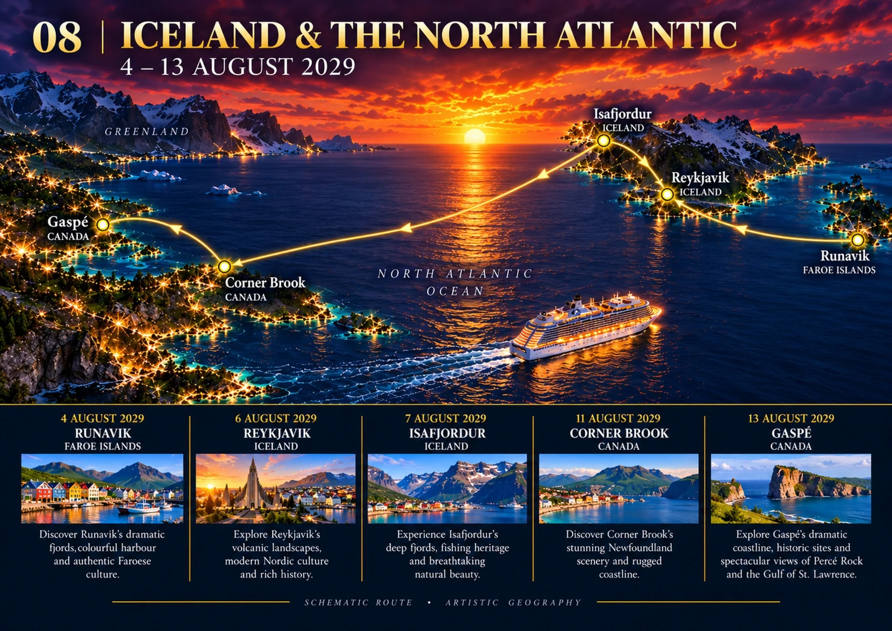

.jpg)
This Faroe Islands port is surrounded by steep green landscapes and a long fjord. You cannot see the best countryside by wandering a few streets. A guided scenic minibus is money well spent here. The Faroe Islands specialise in weather, mountains and roads that turn every bend into a photograph. This is a good place to let someone local do the driving.
Guide to Faroe Islands — Private Cruise Shore Excursion.
Provisional plan — not a confirmed booking.Early August: cool and frequently windy, about 9–14°C, with rain possible at any time.
The Faroe Islands have a long tradition of grass-roofed houses. Lawn maintenance takes on a different meaning when it is above your head.
Aussies let loose in a foreign country. What could possibly go wrong? The plan is simple. Get off the ship, look at some old buildings, photograph something impressive, find lunch and get back before they sail without us. Anything beyond that is a bonus. Our photos and the full, unfiltered account of the day's adventures will be added right here once we've actually been there.
A day aboard Grand Princess, with no port call scheduled.


Iceland’s capital is colourful and compact, but the landscape beyond it is unlike anywhere else: geysers, waterfalls, lava fields and steaming ground. A guided countryside excursion can be more worthwhile than another city bus. Iceland can deliver geysers, lava fields and waterfalls in the space of a day. It can also deliver expensive tours, so the route and time in the coach need scrutiny.
Princess — Best of the Golden Circle.
Provisional plan — not a confirmed booking.Early August: cool, around 9–15°C, with rapid changes between sun, rain and wind.
Iceland has very few trees by historical European standards, which makes the old joke about getting lost in an Icelandic forest unusually short.
Aussies let loose in a foreign country. What could possibly go wrong? The plan is simple. Get off the ship, look at some old buildings, photograph something impressive, find lunch and get back before they sail without us. Anything beyond that is a bonus. Our photos and the full, unfiltered account of the day's adventures will be added right here once we've actually been there.
Scheduled port call. We plan to stay aboard rather than take a water shuttle.
Arrive 7:00 am · Depart 6:00 pm local, scheduled
A day aboard Grand Princess, with no port call scheduled.
A day aboard Grand Princess, with no port call scheduled.
A day aboard Grand Princess, with no port call scheduled.


Corner Brook opens onto the Bay of Islands, with wooded hills and rugged Newfoundland scenery. The town has a waterfront shuttle, but the better views are from the lookouts and coastal drives outside the centre. Newfoundland makes a fine change from the big European cities. The Bay of Islands and lookouts justify a short scenic drive rather than a shopping expedition.
Free port shuttle and downtown sightseeing.
Provisional plan — not a confirmed booking.Mid-August: mild to warm, approximately 13–23°C; cloudy or wet spells are possible.
Captain James Cook surveyed parts of Newfoundland’s coast long before his Pacific voyages. He was already very good at finding other people’s coastlines.
Aussies let loose in a foreign country. What could possibly go wrong? The plan is simple. Get off the ship, look at some old buildings, photograph something impressive, find lunch and get back before they sail without us. Anything beyond that is a bonus. Our photos and the full, unfiltered account of the day's adventures will be added right here once we've actually been there.
Prince Edward Island, Cape Breton, Nova Scotia and New Brunswick.
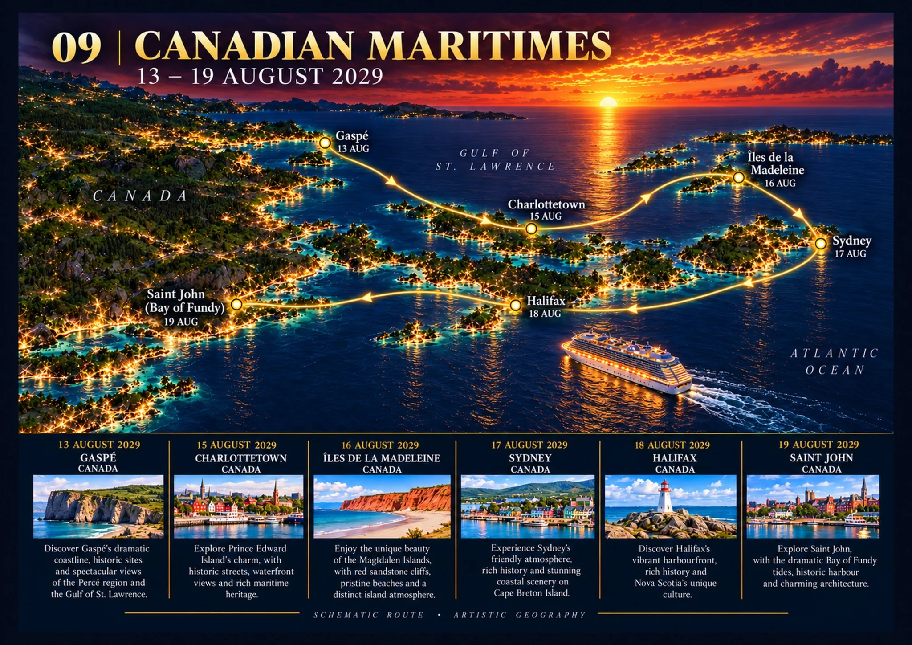
A day aboard Grand Princess, with no port call scheduled.
Scheduled port call. We plan to stay aboard rather than take a water shuttle.
Arrive 7:00 am · Depart 7:00 pm local, scheduled
A day aboard Grand Princess, with no port call scheduled.
.jpg)

Charlottetown is a compact historic capital, while Prince Edward Island is known for beaches, neat farms and red-sand coastline. The best choice depends on whether you want a simple town day or a wider countryside tour. Prince Edward Island looks like a place designed for slow drives through green farmland and coastal villages. The Anne of Green Gables connection is difficult to avoid.
Princess Easy Panoramic Island Drive.
Provisional plan — not a confirmed booking.Mid-August: usually pleasant, around 17–25°C, with occasional showers.
Anne of Green Gables turned a fictional red-haired orphan into one of Prince Edward Island’s most enduring tourism attractions.
Aussies let loose in a foreign country. What could possibly go wrong? The plan is simple. Get off the ship, look at some old buildings, photograph something impressive, find lunch and get back before they sail without us. Anything beyond that is a bonus. Our photos and the full, unfiltered account of the day's adventures will be added right here once we've actually been there.
Scheduled port call. We plan to stay aboard rather than take a water shuttle.
Arrive 7:00 am · Depart 7:00 pm local, scheduled

.jpg)
Sydney’s terminal sits near the waterfront and the giant fiddle, so a cheap town wander is possible. Cape Breton’s countryside and Bras d’Or Lake offer more variety if you want a guided drive. Cape Breton has broad water views and plenty of Celtic heritage. The waterfront is easy enough, but a guided coastal loop offers a better sense of the island.
Princess Best of Cape Breton: Bell Museum, Baddeck & Bras d'Or Lake.
Provisional plan — not a confirmed booking.Mid-August: roughly 16–24°C, with coastal fog or showers possible.
Sydney, Nova Scotia, has a giant fiddle beside the cruise terminal. Nobody is likely to confuse it with a discreet civic monument.
Aussies let loose in a foreign country. What could possibly go wrong? The plan is simple. Get off the ship, look at some old buildings, photograph something impressive, find lunch and get back before they sail without us. Anything beyond that is a bonus. Our photos and the full, unfiltered account of the day's adventures will be added right here once we've actually been there.
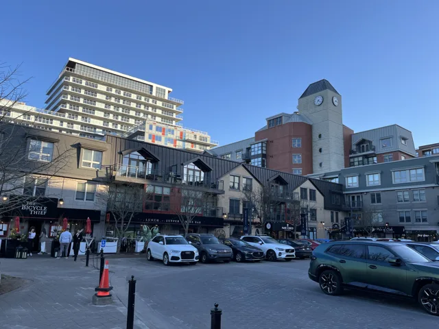
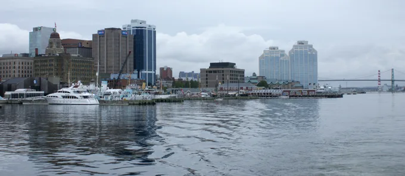
Halifax’s waterfront is easy to enjoy, but Peggy’s Cove provides the postcard view of rocky Atlantic shoreline and lighthouse. It’s worthwhile if you choose a coach with clear short-stop instructions. Halifax has a sizeable harbour history and an excellent waterfront. Peggy’s Cove would make a classic day out, provided the coach returns comfortably before sailing.
Independent Halifax waterfront and lunch.
Provisional plan — not a confirmed booking.Mid-August: warm summer weather, around 16–24°C; coastal fog may linger.
Halifax has a long connection to the Titanic disaster; ships from the city recovered many victims after the sinking.
Aussies let loose in a foreign country. What could possibly go wrong? The plan is simple. Get off the ship, look at some old buildings, photograph something impressive, find lunch and get back before they sail without us. Anything beyond that is a bonus. Our photos and the full, unfiltered account of the day's adventures will be added right here once we've actually been there.
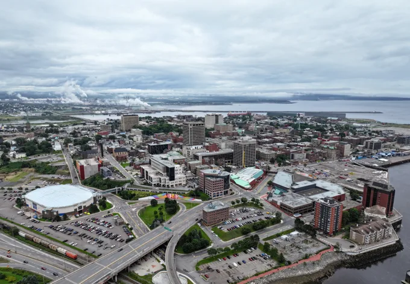
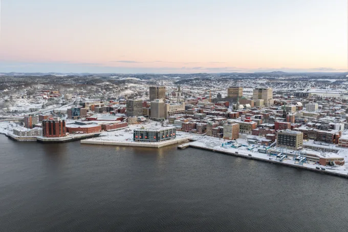
Saint John is a working Atlantic port with interesting old streets, but the Bay of Fundy and its tides are the more unusual attraction. A guided coach can show viewpoints without lengthy walks. Saint John has the Bay of Fundy and tides famous for doing things rivers are not supposed to do. A coastal excursion is likely more distinctive than shopping downtown.
Princess — St. Martins Discovery & The Bay of Fundy.
Provisional plan — not a confirmed booking.Mid-August: around 15–24°C, sometimes humid; fog can affect Bay of Fundy views.
Saint John’s Reversing Falls can appear to flow backwards when Bay of Fundy tides overpower the river. Even the water gets confused.
Aussies let loose in a foreign country. What could possibly go wrong? The plan is simple. Get off the ship, look at some old buildings, photograph something impressive, find lunch and get back before they sail without us. Anything beyond that is a bonus. Our photos and the full, unfiltered account of the day's adventures will be added right here once we've actually been there.
New York and Miami, then the second passage through the Panama Canal.
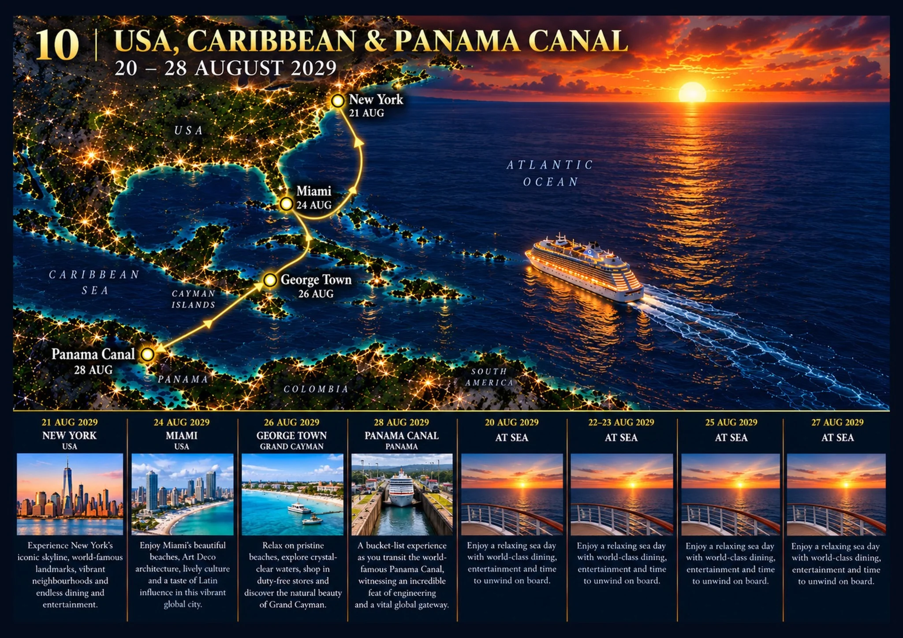
A day aboard Grand Princess, with no port call scheduled.
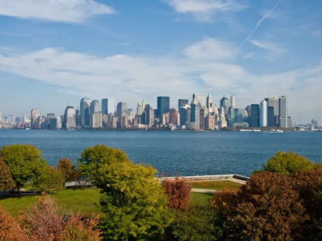
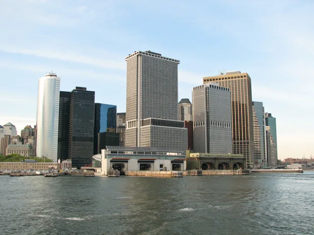
New York is one of the four designated premium stops. The long stay means you can see a substantial number of Manhattan landmarks without racing back mid-afternoon. A good guide and transport are worth paying for. New York cannot be covered properly in one day, but the long port call makes a good attempt possible. We would rather see major neighbourhoods from a vehicle than spend half our visit on subway stairs.
The Complete Private Sightseeing Day.
Provisional plan — not a confirmed booking.Late August: hot and humid, roughly 22–30°C, with thunderstorms possible.
New York’s Statue of Liberty was a French gift. The city has been welcoming arrivals and arguing about them ever since.
Aussies let loose in a foreign country. What could possibly go wrong? The plan is simple. Get off the ship, look at some old buildings, photograph something impressive, find lunch and get back before they sail without us. Anything beyond that is a bonus. Our photos and the full, unfiltered account of the day's adventures will be added right here once we've actually been there.
A day aboard Grand Princess, with no port call scheduled.
A day aboard Grand Princess, with no port call scheduled.
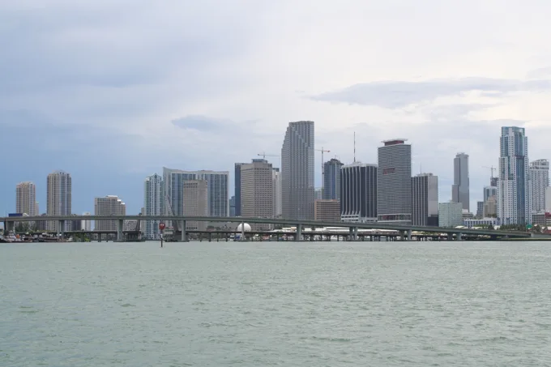
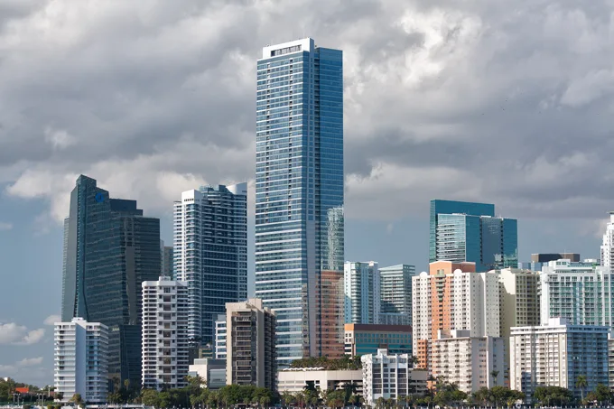
Miami is another premium port. The Art Deco streets, South Beach, Little Havana and skyline are spread out. A guided vehicle makes the most sense, especially if you want lunch without negotiating city traffic. Miami offers beachside Art Deco, Latin neighbourhoods and a very different skyline. A combined city drive and water view could cover the best bits without turning it into a shopping day.
Princess — Best of Miami: By Land & Sea.
Provisional plan — not a confirmed booking.Late August: very hot and humid, around 26–32°C; heavy rain and tropical weather are possible.
Miami Beach’s Art Deco district helped save many colourful 1930s buildings that once seemed embarrassingly old-fashioned.
Aussies let loose in a foreign country. What could possibly go wrong? The plan is simple. Get off the ship, look at some old buildings, photograph something impressive, find lunch and get back before they sail without us. Anything beyond that is a bonus. Our photos and the full, unfiltered account of the day's adventures will be added right here once we've actually been there.
A day aboard Grand Princess, with no port call scheduled.
Scheduled port call. We plan to stay aboard rather than take a water shuttle.
Arrive 7:00 am · Depart 4:00 pm local, scheduled
A day aboard Grand Princess, with no port call scheduled.
Second full crossing, from the Caribbean back to the Pacific. This is a shipboard transit, not a port call.
Transit begins 6:00 am · Transit ends 6:00 pm local, scheduled
Ecuador and Peru, then the long Pacific crossing towards Rapa Nui.
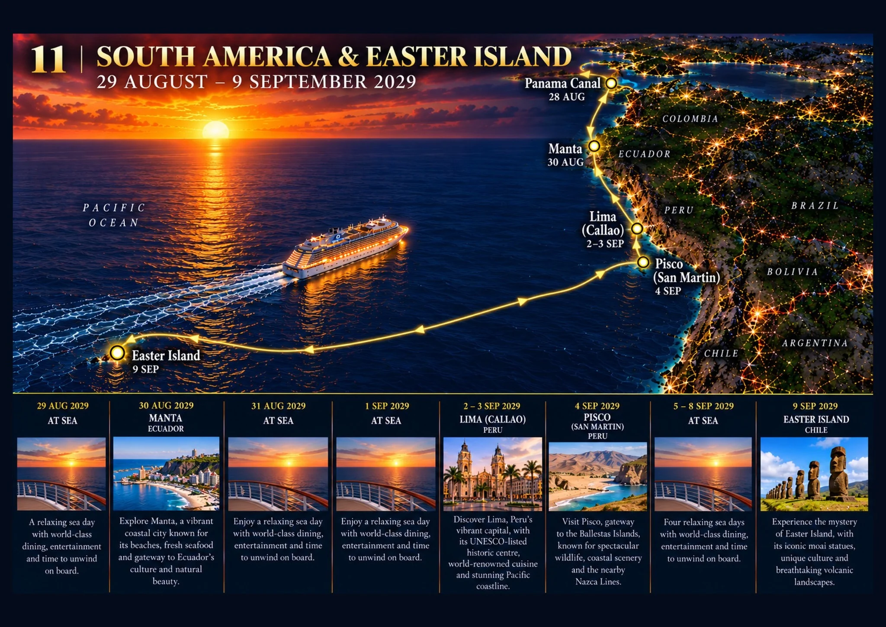
A day aboard Grand Princess, with no port call scheduled.
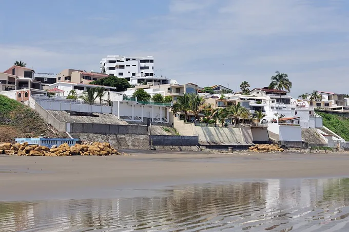
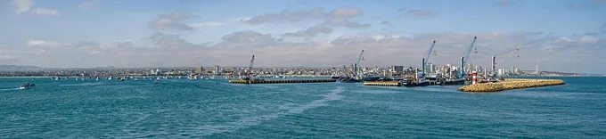
Manta is a busy fishing and commercial port. The nearby town of Montecristi is famous for producing the so-called Panama hat, which is actually Ecuadorian. A cultural excursion offers more than a simple waterfront walk. Montecristi is associated with the famous hats that everyone calls Panamas, despite their Ecuadorian origin. A weaving stop could be more memorable than another beachfront souvenir shop.
Free port shuttle, then independent Manta waterfront sightseeing and seafood lunch.
Provisional plan — not a confirmed booking.Late August: generally warm rather than scorching, around 21–28°C, often cloudy.
The so-called Panama hat is traditionally woven in Ecuador, including around Montecristi. Naming rights clearly went to the better-connected country.
Aussies let loose in a foreign country. What could possibly go wrong? The plan is simple. Get off the ship, look at some old buildings, photograph something impressive, find lunch and get back before they sail without us. Anything beyond that is a bonus. Our photos and the full, unfiltered account of the day's adventures will be added right here once we've actually been there.
A day aboard Grand Princess, with no port call scheduled.
A day aboard Grand Princess, with no port call scheduled.
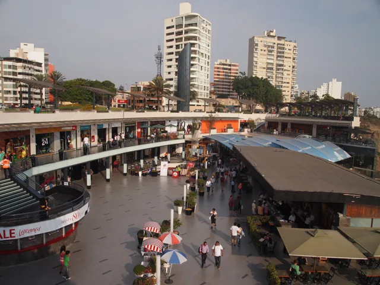
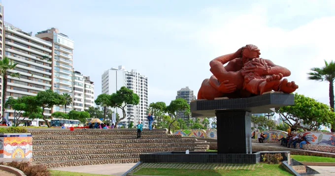
This overnight port call is ideal for seeing more of Lima, but Callao is far from the best tourist districts. Use reliable, pre-arranged transport from the ship. Historic Lima, Miraflores and Barranco are contrasting experiences, so the overnight stay is a rare advantage. Callao is the working port; Lima’s historic core, Miraflores and Barranco are the attractions. With an overnight stop, there is no reason to rush the whole experience into one afternoon.
Princess — Evening City Drive & Dinner at Casa Aliaga.
Provisional plan — not a confirmed booking.Early September: cool and frequently grey, around 15–21°C; mist or low cloud is common.
Lima’s nickname “City of Kings” dates to its Spanish colonial founding. The traffic is not especially royal.
Aussies let loose in a foreign country. What could possibly go wrong? The plan is simple. Get off the ship, look at some old buildings, photograph something impressive, find lunch and get back before they sail without us. Anything beyond that is a bonus. Our photos and the full, unfiltered account of the day's adventures will be added right here once we've actually been there.
The overnight call continues from the previous day’s Lima (Callao) journal panel.
Depart 6:00 pm local, scheduled
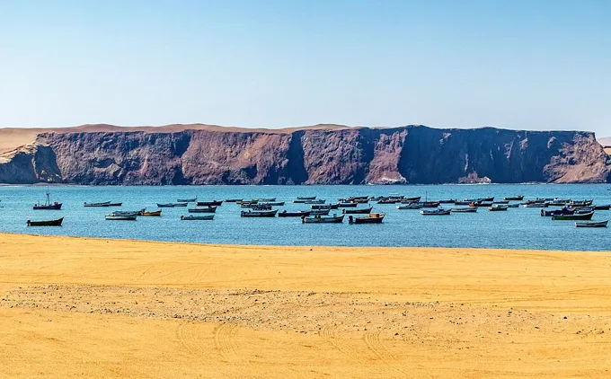
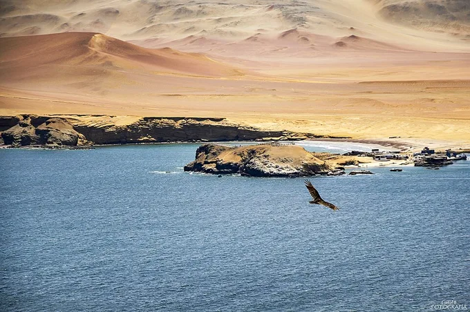
Pisco’s port serves Paracas, a desert-meets-ocean landscape with dramatic cliffs and wildlife. You can explore the reserve by coach, or take a small tourist boat to the Ballestas Islands if boat boarding is comfortable. Paracas puts a desert next to the Pacific, with islands full of marine life just offshore. We would favour the reserve by road if smaller-boat conditions are not comfortable.
To be decided — no tour has been selected in our calendar yet.
We will update this when we settle on a plan.Early September: dry coastal desert climate, roughly 15–23°C, often cloudy or misty early.
Pisco is also the name of Peru’s famous grape spirit, which remains the subject of a spirited argument with Chile.
Aussies let loose in a foreign country. What could possibly go wrong? The plan is simple. Get off the ship, look at some old buildings, photograph something impressive, find lunch and get back before they sail without us. Anything beyond that is a bonus. Our photos and the full, unfiltered account of the day's adventures will be added right here once we've actually been there.
A day aboard Grand Princess, with no port call scheduled.
A day aboard Grand Princess, with no port call scheduled.
A day aboard Grand Princess, with no port call scheduled.
A day aboard Grand Princess, with no port call scheduled.
Remote Pacific islands, Pitcairn and French Polynesia.
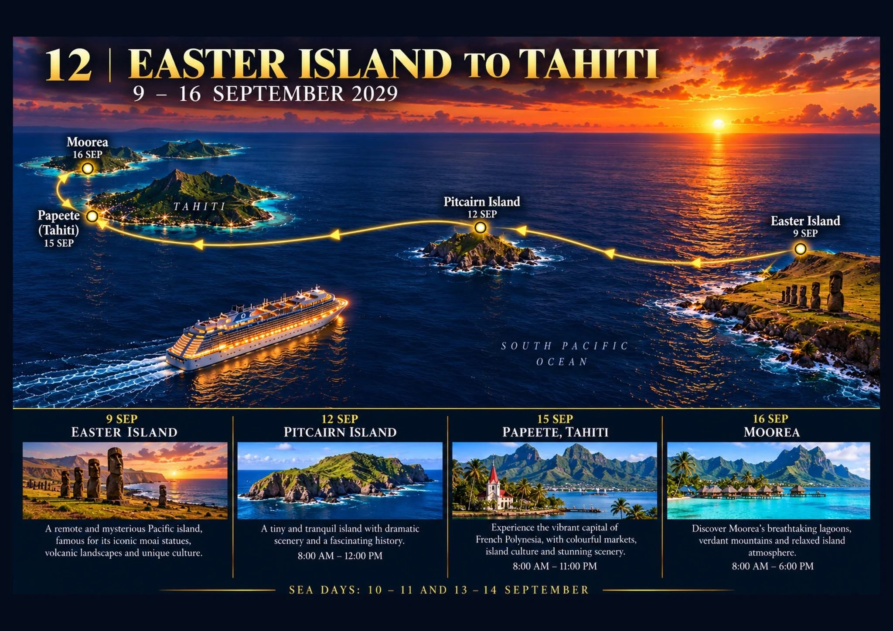
Published itineraries differ on a water-shuttle call versus scenic cruising. Recheck the Princess Travel Summary; no shore outing is planned.
A day aboard Grand Princess, with no port call scheduled.
A day aboard Grand Princess, with no port call scheduled.
Princess lists scenic cruising only. No landing is scheduled.
A day aboard Grand Princess, with no port call scheduled.
A day aboard Grand Princess, with no port call scheduled.
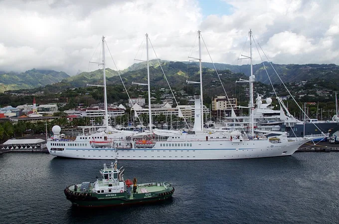
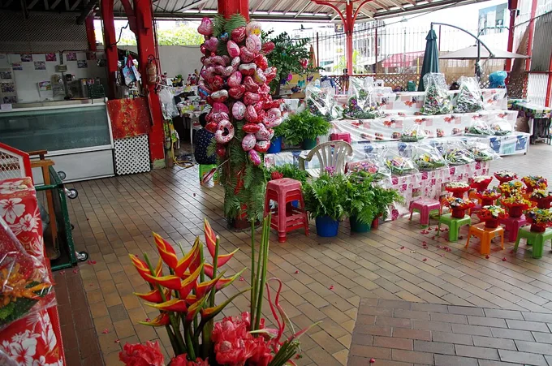
Papeete is a port city surrounded by a green volcanic island. It has an easy market and waterfront, while a guided coastal bus tour can show beaches, waterfalls and beautiful overlooks beyond town. The late departure leaves room for a relaxed evening. Papeete is busy and unpolished compared with the postcard image of Tahiti. The coastal roads, viewpoints and a good lunch may reveal far more than a stroll through the port market.
To be decided — no tour has been selected in our calendar yet.
We will update this when we settle on a plan.Mid-September: tropical warmth around 22–29°C, with trade winds and occasional showers.
Tahiti’s famous black pearls come from black-lipped oysters. The oysters do the hard work; the jewellers receive the markup.
Aussies let loose in a foreign country. What could possibly go wrong? The plan is simple. Get off the ship, look at some old buildings, photograph something impressive, find lunch and get back before they sail without us. Anything beyond that is a bonus. Our photos and the full, unfiltered account of the day's adventures will be added right here once we've actually been there.
Scheduled port call. We plan to stay aboard rather than take a water shuttle.
Arrive 8:00 am · Depart 6:00 pm local, scheduled
New Zealand, Norfolk Island and the final run home to Sydney.
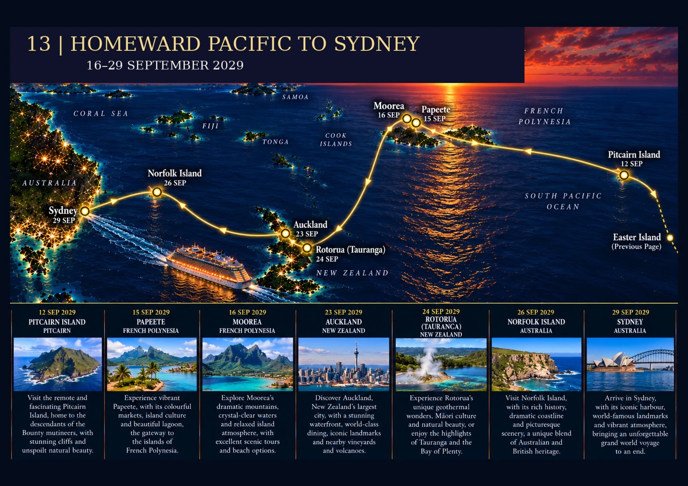
A day aboard Grand Princess, with no port call scheduled.
A day aboard Grand Princess, with no port call scheduled.
On the westbound crossing, Thursday 20 September is skipped between this day and the next.
Friday 21 September follows Wednesday 19 September after the westbound Date Line crossing.
A day aboard Grand Princess, with no port call scheduled.
Auckland welcomes us back across the Pacific with a working harbour and a skyline built around volcanic hills. This will be a relaxed return visit before the final stretch home.
Wander around town and stop for lunch.
Provisional plan — not a confirmed booking.Late September: early spring, about 10–18°C, with showers and breezes possible.
Auckland is known as the City of Sails. On a good day its harbour looks like someone lost control of a yacht catalogue.
Aussies let loose in a foreign country. What could possibly go wrong? The plan is simple. Get off the ship, look at some old buildings, photograph something impressive, find lunch and get back before they sail without us. Anything beyond that is a bonus. Our photos and the full, unfiltered account of the day's adventures will be added right here once we've actually been there.
Tauranga and nearby Mount Maunganui sit on the Bay of Plenty, with beaches, a harbour and plenty of cafés. We have been before, so the agenda is deliberately modest.
Wander around town and stop for lunch.
Provisional plan — not a confirmed booking.Late September: early spring, roughly 9–18°C; sunny breaks, showers and cool wind are all possible.
The Bay of Plenty was named by Captain Cook. The original branding committee appears to have been unusually optimistic.
Aussies let loose in a foreign country. What could possibly go wrong? The plan is simple. Get off the ship, look at some old buildings, photograph something impressive, find lunch and get back before they sail without us. Anything beyond that is a bonus. Our photos and the full, unfiltered account of the day's adventures will be added right here once we've actually been there.
A day aboard Grand Princess, with no port call scheduled.
Scheduled port call. We plan to stay aboard rather than take a water shuttle.
Arrive 9:00 am · Depart 7:00 pm local, scheduled
A day aboard Grand Princess, with no port call scheduled.
A day aboard Grand Princess, with no port call scheduled.
Grand Princess returns to Sydney at the end of the 129-night voyage.
Arrive 6:00 am local, scheduled
No matching voyage days.